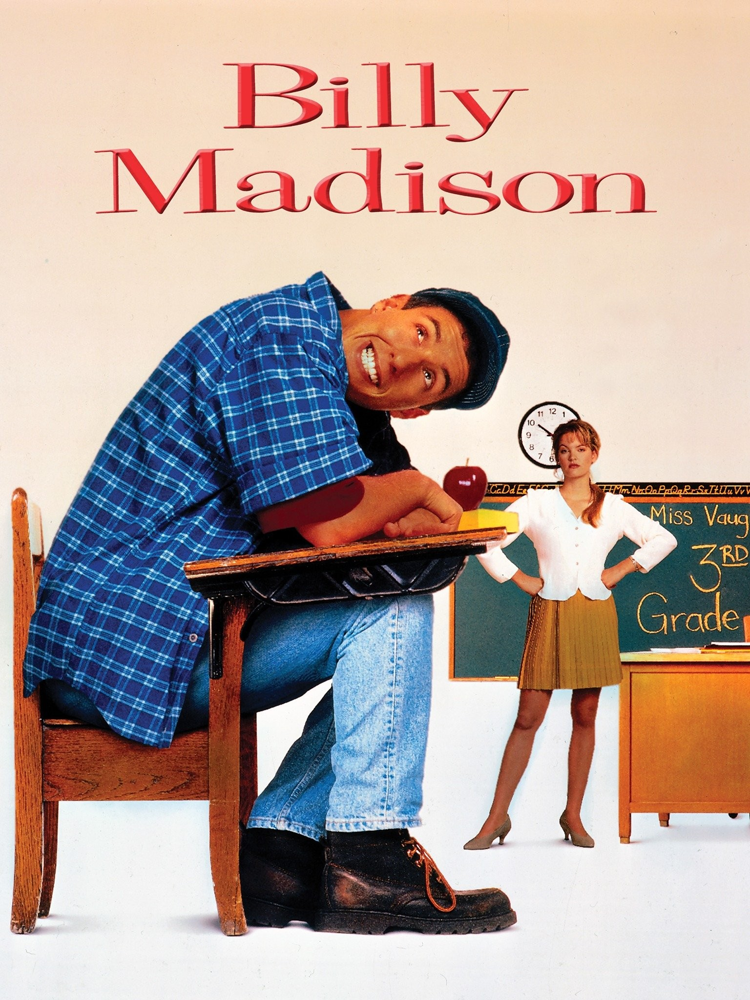

Adam Sandler Movies
Happy Gilmore

"Happy Gilmore" is a 1996 sports comedy film starring Adam Sandler as the titular character. The movie follows the story of Happy, a failed ice hockey player who discovers his talent for long-distance golf shots. In a bid to save his grandmother's house, Happy joins the professional golf tour, bringing his unconventional style and brash personality to the refined world of golf. Known for slapstick comedy and memorable one-liners, "Happy Gilmore" is a cult favorite that combines humor, sports, and a touch of romance.
Billy Madison
"Billy Madison" is a 1995 comedy film featuring Adam Sandler as the main character, Billy Madison. The story revolves around Billy, a grown man who must repeat grades 1 through 12 to inherit his father's hotel empire. Filled with Sandler's trademark humor, the film explores Billy's quirky and often absurd attempts to prove himself academically, all while navigating comical interactions with fellow students and teachers. "Billy Madison" is celebrated for its outrageous comedy, memorable quotes, and Sandler's comedic performance, making it a beloved classic in the world of comedy films.